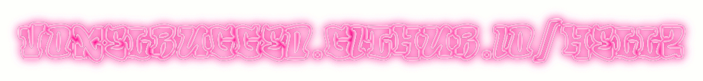
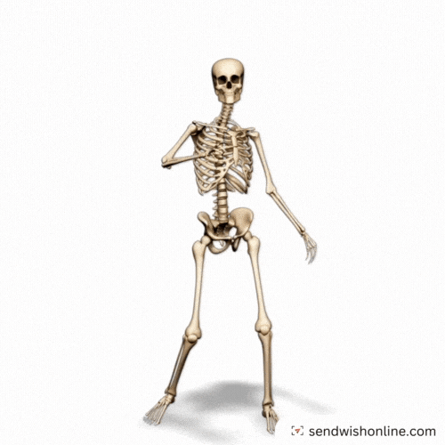
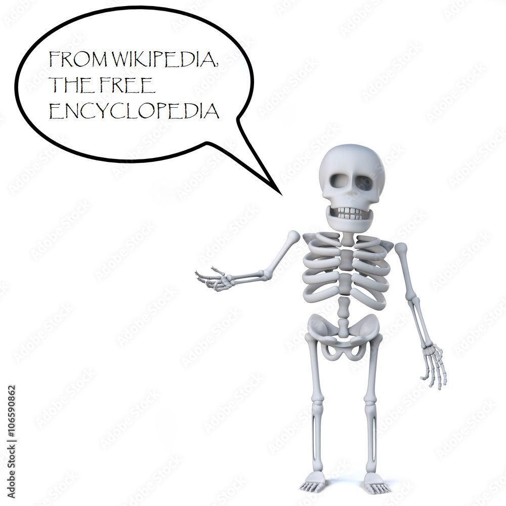
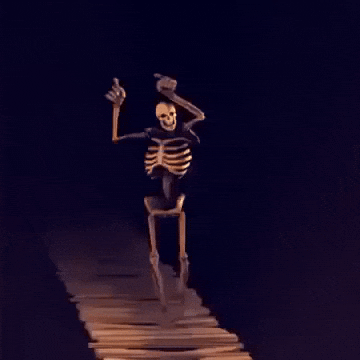
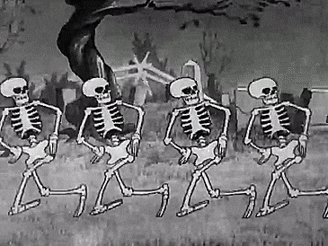

Skeleton is a winter sliding sport in which a person rides a small sled, known as a skeleton bobsled (or bobsleigh), down a frozen track while lying face down and head-first. The sport and the sled may have been named from the bony appearance of the sled.[1]
Unlike other sliding sports of bobsleigh and luge, the race always involves single riders. Like bobsleigh, but unlike luge, the race begins with a running start from the opening gate at the top of the course.
The skeleton sled is thinner and heavier than the luge sled, and skeleton gives the rider more precise control of the sled. Skeleton is the slowest of the three sliding sports, as skeleton's face-down, head-first riding position is less aerodynamic than luge's face-up, feet-first ride.[2]
Previously, skeleton appeared in the Olympic program in St. Moritz, Switzerland, in 1928 and again in 1948.[3] It was added permanently to the Olympic program for the 2002 Winter Olympics, at which stage a women's race was added.
During elite racing the rider experiences accelerations up to 5 g and reaches speeds over 130 km/h (81 mph).[1]
HTML headings are titles or subtitles that you want to display on a webpage. i dont car

wife crossing
P

MINECRAFT 1.3.2 СКАЧАТЬ БЕСПЛАТНО БЕЗ ТОРРЕНТА

MINECRAFT 1.3.2 ЭДВАРД ГИЕРЕК MOD СКАЧАТЬ
ESCAPE
a href=
/a
Example Hyperlink
matura z polskiego 2025
Przed użyciem zapoznaj się z treścią ulotki dołączonej do opakowania bądź skonsultuj się z lekarzem lub farmaceutą, gdyż każdy lek niewłaściwie stosowany zagraża Twojemu życiu lub zdrowiu